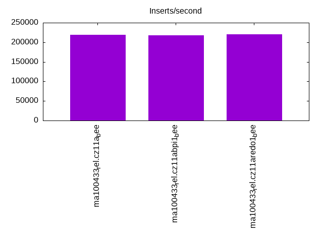

This is a report for the insert benchmark with 32M docs and 4 client(s). It is generated by scripts (bash, awk, sed) and Tufte might not be impressed. An overview of the insert benchmark is here and a short update is here. Below, by DBMS, I mean DBMS+version.config. An example is my8020.c10b40 where my means MySQL, 8020 is version 8.0.20 and c10b40 is the name for the configuration file.
The test server has 8 AMD cores, 16G RAM and an NVMe SSD. It is described here as the Beelink. The benchmark was run with 1 client and there were 1 or 3 connections per client (1 for queries or inserts without rate limits, 1+1 for rate limited inserts+deletes). It uses 4 tables with a table per client. It loads 8M rows per table without secondary indexes, creates 3 secondary indexes per table, then inserts 40m+10m rows per table with a delete per insert to avoid growing the table. It then does 6 read+write tests for 1800s each that do queries as fast as possible with 100,100,500,500,1000,1000 inserts/s and the same for deletes/s per client concurrent with the queries. The database is cached in memory. Clients and the DBMS share one server. The per-database configs are in the per-database subdirectories here.
The tested DBMS are:
The numbers are inserts/s for l.i0, l.i1 and l.i2, indexed docs (or rows) /s for l.x and queries/s for qr100, qp100 thru qr1000, qp1000" The values are the average rate over the entire test for inserts (IPS) and queries (QPS). The range of values for IPS and QPS is split into 3 parts: bottom 25%, middle 50%, top 25%. Values in the bottom 25% have a red background, values in the top 25% have a green background and values in the middle have no color. A gray background is used for values that can be ignored because the DBMS did not sustain the target insert rate. Red backgrounds are not used when the minimum value is within 80% of the max value.
| dbms | l.i0 | l.x | l.i1 | l.i2 | qr100 | qp100 | qr500 | qp500 | qr1000 | qp1000 |
|---|---|---|---|---|---|---|---|---|---|---|
| ma100433_rel.cz11a_bee | 219178 | 592594 | 47591 | 19920 | 16424 | 18731 | 16258 | 18135 | 15744 | 17476 |
| ma100433_rel.cz11abpi1_bee | 217687 | 592594 | 42610 | 18779 | 16497 | 18593 | 16262 | 18232 | 15864 | 17484 |
| ma100433_rel.cz11aredo1_bee | 220690 | 592594 | 47747 | 19891 | 16290 | 17827 | 15894 | 17164 | 15589 | 16574 |
This table has relative throughput, throughput for the DBMS relative to the DBMS in the first line, using the absolute throughput from the previous table. Values less than 0.95 have a yellow background. Values greater than 1.05 have a blue background.
| dbms | l.i0 | l.x | l.i1 | l.i2 | qr100 | qp100 | qr500 | qp500 | qr1000 | qp1000 |
|---|---|---|---|---|---|---|---|---|---|---|
| ma100433_rel.cz11a_bee | 1.00 | 1.00 | 1.00 | 1.00 | 1.00 | 1.00 | 1.00 | 1.00 | 1.00 | 1.00 |
| ma100433_rel.cz11abpi1_bee | 0.99 | 1.00 | 0.90 | 0.94 | 1.00 | 0.99 | 1.00 | 1.01 | 1.01 | 1.00 |
| ma100433_rel.cz11aredo1_bee | 1.01 | 1.00 | 1.00 | 1.00 | 0.99 | 0.95 | 0.98 | 0.95 | 0.99 | 0.95 |
This lists the average rate of inserts/s for the tests that do inserts concurrent with queries. For such tests the query rate is listed in the table above. The read+write tests are setup so that the insert rate should match the target rate every second. Cells that are not at least 95% of the target have a red background to indicate a failure to satisfy the target.
| dbms | qr100.L1 | qp100.L2 | qr500.L3 | qp500.L4 | qr1000.L5 | qp1000.L6 |
|---|---|---|---|---|---|---|
| ma100433_rel.cz11a_bee | 399 | 399 | 1994 | 1994 | 3989 | 3989 |
| ma100433_rel.cz11abpi1_bee | 399 | 399 | 1994 | 1993 | 3987 | 3987 |
| ma100433_rel.cz11aredo1_bee | 399 | 399 | 1994 | 1994 | 3989 | 3989 |
| target | 400 | 400 | 2000 | 2000 | 4000 | 4000 |
l.i0: load without secondary indexes. Graphs for performance per 1-second interval are here.
Average throughput:
Insert response time histogram: each cell has the percentage of responses that take <= the time in the header and max is the max response time in seconds. For the max column values in the top 25% of the range have a red background and in the bottom 25% of the range have a green background. The red background is not used when the min value is within 80% of the max value.
| dbms | 256us | 1ms | 4ms | 16ms | 64ms | 256ms | 1s | 4s | 16s | gt | max |
|---|---|---|---|---|---|---|---|---|---|---|---|
| ma100433_rel.cz11a_bee | 0.385 | 98.043 | 1.526 | 0.030 | 0.016 | 0.147 | |||||
| ma100433_rel.cz11abpi1_bee | 0.439 | 97.974 | 1.539 | 0.033 | 0.016 | 0.141 | |||||
| ma100433_rel.cz11aredo1_bee | 0.488 | 98.011 | 1.461 | 0.024 | 0.016 | 0.138 |
Performance metrics for the DBMS listed above. Some are normalized by throughput, others are not. Legend for results is here.
ips qps rps rmbps wps wmbps rpq rkbpq wpi wkbpi csps cpups cspq cpupq dbgb1 dbgb2 rss maxop p50 p99 tag 219178 0 0 0.0 904.1 78.4 0.000 0.000 0.004 0.366 33638 78.5 0.153 29 2.1 18.0 NA 0.147 60709 46349 ma100433_rel.cz11a_bee 217687 0 0 0.0 879.8 77.6 0.000 0.000 0.004 0.365 32570 79.4 0.150 29 2.1 18.0 NA 0.141 59456 42753 ma100433_rel.cz11abpi1_bee 220690 0 0 0.0 856.2 78.1 0.000 0.000 0.004 0.362 33181 79.2 0.150 29 2.1 18.0 NA 0.138 60793 47548 ma100433_rel.cz11aredo1_bee
l.x: create secondary indexes.
Average throughput:
Performance metrics for the DBMS listed above. Some are normalized by throughput, others are not. Legend for results is here.
ips qps rps rmbps wps wmbps rpq rkbpq wpi wkbpi csps cpups cspq cpupq dbgb1 dbgb2 rss maxop p50 p99 tag 592594 0 0 0.0 2288.0 446.9 0.000 0.000 0.004 0.772 18213 45.6 0.031 6 4.8 20.6 NA 0.002 NA NA ma100433_rel.cz11a_bee 592594 0 0 0.0 1941.0 437.2 0.000 0.000 0.003 0.755 7119 45.3 0.012 6 4.8 20.6 NA 0.002 NA NA ma100433_rel.cz11abpi1_bee 592594 0 0 0.0 2383.8 450.4 0.000 0.000 0.004 0.778 18324 45.6 0.031 6 4.8 20.6 NA 0.002 NA NA ma100433_rel.cz11aredo1_bee
l.i1: continue load after secondary indexes created with 50 inserts per transaction. Graphs for performance per 1-second interval are here.
Average throughput:
Insert response time histogram: each cell has the percentage of responses that take <= the time in the header and max is the max response time in seconds. For the max column values in the top 25% of the range have a red background and in the bottom 25% of the range have a green background. The red background is not used when the min value is within 80% of the max value.
| dbms | 256us | 1ms | 4ms | 16ms | 64ms | 256ms | 1s | 4s | 16s | gt | max |
|---|---|---|---|---|---|---|---|---|---|---|---|
| ma100433_rel.cz11a_bee | 70.290 | 28.778 | 0.927 | 0.005 | 0.168 | ||||||
| ma100433_rel.cz11abpi1_bee | 62.936 | 35.936 | 1.127 | 0.001 | 0.080 | ||||||
| ma100433_rel.cz11aredo1_bee | 70.596 | 28.479 | 0.919 | 0.006 | 0.176 |
Delete response time histogram: each cell has the percentage of responses that take <= the time in the header and max is the max response time in seconds. For the max column values in the top 25% of the range have a red background and in the bottom 25% of the range have a green background. The red background is not used when the min value is within 80% of the max value.
| dbms | 256us | 1ms | 4ms | 16ms | 64ms | 256ms | 1s | 4s | 16s | gt | max |
|---|---|---|---|---|---|---|---|---|---|---|---|
| ma100433_rel.cz11a_bee | 71.681 | 27.516 | 0.798 | 0.005 | 0.170 | ||||||
| ma100433_rel.cz11abpi1_bee | 64.804 | 34.293 | 0.903 | 0.001 | 0.076 | ||||||
| ma100433_rel.cz11aredo1_bee | 72.002 | 27.202 | 0.791 | 0.005 | 0.173 |
Performance metrics for the DBMS listed above. Some are normalized by throughput, others are not. Legend for results is here.
ips qps rps rmbps wps wmbps rpq rkbpq wpi wkbpi csps cpups cspq cpupq dbgb1 dbgb2 rss maxop p50 p99 tag 47591 0 0 0.0 5223.2 193.1 0.000 0.000 0.110 4.156 29832 84.5 0.627 142 8.2 24.7 NA 0.168 11937 8787 ma100433_rel.cz11a_bee 42610 0 0 0.0 4591.8 174.0 0.000 0.000 0.108 4.181 27492 79.4 0.645 149 7.9 24.1 NA 0.080 10588 7242 ma100433_rel.cz11abpi1_bee 47747 0 0 0.0 5119.4 190.0 0.000 0.000 0.107 4.075 29563 84.7 0.619 142 8.2 24.8 NA 0.176 12037 8991 ma100433_rel.cz11aredo1_bee
l.i2: continue load after secondary indexes created with 5 inserts per transaction. Graphs for performance per 1-second interval are here.
Average throughput:
Insert response time histogram: each cell has the percentage of responses that take <= the time in the header and max is the max response time in seconds. For the max column values in the top 25% of the range have a red background and in the bottom 25% of the range have a green background. The red background is not used when the min value is within 80% of the max value.
| dbms | 256us | 1ms | 4ms | 16ms | 64ms | 256ms | 1s | 4s | 16s | gt | max |
|---|---|---|---|---|---|---|---|---|---|---|---|
| ma100433_rel.cz11a_bee | 0.001 | 79.009 | 18.998 | 1.950 | 0.040 | 0.001 | 0.080 | ||||
| ma100433_rel.cz11abpi1_bee | 0.001 | 76.911 | 20.258 | 2.818 | 0.010 | 0.002 | 0.094 | ||||
| ma100433_rel.cz11aredo1_bee | 0.001 | 79.286 | 18.687 | 1.971 | 0.053 | 0.001 | 0.078 |
Delete response time histogram: each cell has the percentage of responses that take <= the time in the header and max is the max response time in seconds. For the max column values in the top 25% of the range have a red background and in the bottom 25% of the range have a green background. The red background is not used when the min value is within 80% of the max value.
| dbms | 256us | 1ms | 4ms | 16ms | 64ms | 256ms | 1s | 4s | 16s | gt | max |
|---|---|---|---|---|---|---|---|---|---|---|---|
| ma100433_rel.cz11a_bee | 0.004 | 79.246 | 18.745 | 1.965 | 0.039 | 0.001 | 0.079 | ||||
| ma100433_rel.cz11abpi1_bee | 0.003 | 77.002 | 20.154 | 2.830 | 0.009 | 0.002 | 0.094 | ||||
| ma100433_rel.cz11aredo1_bee | 0.006 | 79.481 | 18.469 | 1.991 | 0.052 | 0.002 | 0.078 |
Performance metrics for the DBMS listed above. Some are normalized by throughput, others are not. Legend for results is here.
ips qps rps rmbps wps wmbps rpq rkbpq wpi wkbpi csps cpups cspq cpupq dbgb1 dbgb2 rss maxop p50 p99 tag 19920 0 0 0.0 3388.3 127.3 0.000 0.000 0.170 6.543 65692 79.6 3.298 320 8.2 24.7 NA 0.080 5084 3361 ma100433_rel.cz11a_bee 18779 0 0 0.0 3347.1 124.3 0.000 0.000 0.178 6.776 62129 76.5 3.308 326 7.9 24.1 NA 0.094 4705 3083 ma100433_rel.cz11abpi1_bee 19891 0 0 0.0 3417.5 128.2 0.000 0.000 0.172 6.600 65452 79.5 3.291 320 8.2 24.8 NA 0.078 5067 1473 ma100433_rel.cz11aredo1_bee
qr100.L1: range queries with 100 insert/s per client. Graphs for performance per 1-second interval are here.
Average throughput:
Query response time histogram: each cell has the percentage of responses that take <= the time in the header and max is the max response time in seconds. For max values in the top 25% of the range have a red background and in the bottom 25% of the range have a green background. The red background is not used when the min value is within 80% of the max value.
| dbms | 256us | 1ms | 4ms | 16ms | 64ms | 256ms | 1s | 4s | 16s | gt | max |
|---|---|---|---|---|---|---|---|---|---|---|---|
| ma100433_rel.cz11a_bee | 73.453 | 26.423 | 0.121 | 0.004 | nonzero | 0.026 | |||||
| ma100433_rel.cz11abpi1_bee | 73.992 | 25.890 | 0.113 | 0.004 | nonzero | 0.027 | |||||
| ma100433_rel.cz11aredo1_bee | 72.252 | 27.622 | 0.121 | 0.005 | nonzero | 0.024 |
Insert response time histogram: each cell has the percentage of responses that take <= the time in the header and max is the max response time in seconds. For max values in the top 25% of the range have a red background and in the bottom 25% of the range have a green background. The red background is not used when the min value is within 80% of the max value.
| dbms | 256us | 1ms | 4ms | 16ms | 64ms | 256ms | 1s | 4s | 16s | gt | max |
|---|---|---|---|---|---|---|---|---|---|---|---|
| ma100433_rel.cz11a_bee | 94.549 | 5.146 | 0.306 | 0.044 | |||||||
| ma100433_rel.cz11abpi1_bee | 94.812 | 4.542 | 0.646 | 0.039 | |||||||
| ma100433_rel.cz11aredo1_bee | 94.278 | 5.389 | 0.333 | 0.040 |
Delete response time histogram: each cell has the percentage of responses that take <= the time in the header and max is the max response time in seconds. For max values in the top 25% of the range have a red background and in the bottom 25% of the range have a green background. The red background is not used when the min value is within 80% of the max value.
| dbms | 256us | 1ms | 4ms | 16ms | 64ms | 256ms | 1s | 4s | 16s | gt | max |
|---|---|---|---|---|---|---|---|---|---|---|---|
| ma100433_rel.cz11a_bee | 96.174 | 3.653 | 0.174 | 0.037 | |||||||
| ma100433_rel.cz11abpi1_bee | 96.271 | 3.368 | 0.361 | 0.034 | |||||||
| ma100433_rel.cz11aredo1_bee | 95.778 | 4.007 | 0.215 | 0.033 |
Performance metrics for the DBMS listed above. Some are normalized by throughput, others are not. Legend for results is here.
ips qps rps rmbps wps wmbps rpq rkbpq wpi wkbpi csps cpups cspq cpupq dbgb1 dbgb2 rss maxop p50 p99 tag 399 16424 0 0.0 3103.8 94.1 0.000 0.000 7.787 241.813 73544 51.5 4.478 251 8.2 24.7 NA 0.026 4139 3614 ma100433_rel.cz11a_bee 399 16497 0 0.0 3080.4 93.5 0.000 0.000 7.728 240.214 74297 51.6 4.504 250 7.9 24.1 NA 0.027 4091 3564 ma100433_rel.cz11abpi1_bee 399 16290 0 0.0 3098.9 94.0 0.000 0.000 7.770 241.318 72793 51.6 4.469 253 8.2 24.8 NA 0.024 4123 3532 ma100433_rel.cz11aredo1_bee
qp100.L2: point queries with 100 insert/s per client. Graphs for performance per 1-second interval are here.
Average throughput:
Query response time histogram: each cell has the percentage of responses that take <= the time in the header and max is the max response time in seconds. For max values in the top 25% of the range have a red background and in the bottom 25% of the range have a green background. The red background is not used when the min value is within 80% of the max value.
| dbms | 256us | 1ms | 4ms | 16ms | 64ms | 256ms | 1s | 4s | 16s | gt | max |
|---|---|---|---|---|---|---|---|---|---|---|---|
| ma100433_rel.cz11a_bee | 94.288 | 5.679 | 0.032 | 0.001 | nonzero | 0.021 | |||||
| ma100433_rel.cz11abpi1_bee | 93.506 | 6.463 | 0.030 | 0.001 | nonzero | 0.022 | |||||
| ma100433_rel.cz11aredo1_bee | 91.041 | 8.926 | 0.033 | 0.001 | nonzero | 0.023 |
Insert response time histogram: each cell has the percentage of responses that take <= the time in the header and max is the max response time in seconds. For max values in the top 25% of the range have a red background and in the bottom 25% of the range have a green background. The red background is not used when the min value is within 80% of the max value.
| dbms | 256us | 1ms | 4ms | 16ms | 64ms | 256ms | 1s | 4s | 16s | gt | max |
|---|---|---|---|---|---|---|---|---|---|---|---|
| ma100433_rel.cz11a_bee | 94.861 | 4.854 | 0.285 | 0.034 | |||||||
| ma100433_rel.cz11abpi1_bee | 94.632 | 4.833 | 0.535 | 0.039 | |||||||
| ma100433_rel.cz11aredo1_bee | 94.062 | 5.479 | 0.458 | 0.040 |
Delete response time histogram: each cell has the percentage of responses that take <= the time in the header and max is the max response time in seconds. For max values in the top 25% of the range have a red background and in the bottom 25% of the range have a green background. The red background is not used when the min value is within 80% of the max value.
| dbms | 256us | 1ms | 4ms | 16ms | 64ms | 256ms | 1s | 4s | 16s | gt | max |
|---|---|---|---|---|---|---|---|---|---|---|---|
| ma100433_rel.cz11a_bee | 96.382 | 3.410 | 0.208 | 0.033 | |||||||
| ma100433_rel.cz11abpi1_bee | 96.333 | 3.299 | 0.368 | 0.036 | |||||||
| ma100433_rel.cz11aredo1_bee | 95.840 | 3.854 | 0.306 | 0.032 |
Performance metrics for the DBMS listed above. Some are normalized by throughput, others are not. Legend for results is here.
ips qps rps rmbps wps wmbps rpq rkbpq wpi wkbpi csps cpups cspq cpupq dbgb1 dbgb2 rss maxop p50 p99 tag 399 18731 0 0.0 3089.4 93.7 0.000 0.000 7.747 240.574 82779 52.1 4.419 223 8.2 24.7 NA 0.021 4811 4171 ma100433_rel.cz11a_bee 399 18593 0 0.0 3074.5 93.3 0.000 0.000 7.709 239.636 82612 52.1 4.443 224 7.9 24.1 NA 0.022 4763 4077 ma100433_rel.cz11abpi1_bee 399 17827 0 0.0 3078.0 93.3 0.000 0.000 7.718 239.683 76854 51.8 4.311 232 8.2 24.8 NA 0.023 4445 4075 ma100433_rel.cz11aredo1_bee
qr500.L3: range queries with 500 insert/s per client. Graphs for performance per 1-second interval are here.
Average throughput:
Query response time histogram: each cell has the percentage of responses that take <= the time in the header and max is the max response time in seconds. For max values in the top 25% of the range have a red background and in the bottom 25% of the range have a green background. The red background is not used when the min value is within 80% of the max value.
| dbms | 256us | 1ms | 4ms | 16ms | 64ms | 256ms | 1s | 4s | 16s | gt | max |
|---|---|---|---|---|---|---|---|---|---|---|---|
| ma100433_rel.cz11a_bee | 76.213 | 23.401 | 0.342 | 0.042 | 0.001 | 0.038 | |||||
| ma100433_rel.cz11abpi1_bee | 75.604 | 24.085 | 0.269 | 0.041 | 0.001 | 0.034 | |||||
| ma100433_rel.cz11aredo1_bee | 73.866 | 25.672 | 0.422 | 0.039 | 0.001 | 0.041 |
Insert response time histogram: each cell has the percentage of responses that take <= the time in the header and max is the max response time in seconds. For max values in the top 25% of the range have a red background and in the bottom 25% of the range have a green background. The red background is not used when the min value is within 80% of the max value.
| dbms | 256us | 1ms | 4ms | 16ms | 64ms | 256ms | 1s | 4s | 16s | gt | max |
|---|---|---|---|---|---|---|---|---|---|---|---|
| ma100433_rel.cz11a_bee | 72.165 | 25.321 | 2.514 | 0.057 | |||||||
| ma100433_rel.cz11abpi1_bee | 74.887 | 22.925 | 2.188 | 0.049 | |||||||
| ma100433_rel.cz11aredo1_bee | 76.338 | 21.676 | 1.986 | 0.054 |
Delete response time histogram: each cell has the percentage of responses that take <= the time in the header and max is the max response time in seconds. For max values in the top 25% of the range have a red background and in the bottom 25% of the range have a green background. The red background is not used when the min value is within 80% of the max value.
| dbms | 256us | 1ms | 4ms | 16ms | 64ms | 256ms | 1s | 4s | 16s | gt | max |
|---|---|---|---|---|---|---|---|---|---|---|---|
| ma100433_rel.cz11a_bee | 78.344 | 19.893 | 1.762 | 0.058 | |||||||
| ma100433_rel.cz11abpi1_bee | 80.749 | 17.740 | 1.511 | 0.049 | |||||||
| ma100433_rel.cz11aredo1_bee | 81.836 | 16.764 | 1.400 | 0.055 |
Performance metrics for the DBMS listed above. Some are normalized by throughput, others are not. Legend for results is here.
ips qps rps rmbps wps wmbps rpq rkbpq wpi wkbpi csps cpups cspq cpupq dbgb1 dbgb2 rss maxop p50 p99 tag 1994 16258 0 0.0 10116.6 307.8 0.000 0.000 5.073 158.016 94381 55.3 5.805 272 8.2 24.7 NA 0.038 4091 3548 ma100433_rel.cz11a_bee 1994 16262 0 0.0 9162.3 279.0 0.000 0.000 4.594 143.260 91788 55.3 5.645 272 7.9 24.1 NA 0.034 4061 3503 ma100433_rel.cz11abpi1_bee 1994 15894 0 0.0 10135.4 308.3 0.000 0.000 5.082 158.296 93978 55.2 5.913 278 8.2 24.8 NA 0.041 3980 3516 ma100433_rel.cz11aredo1_bee
qp500.L4: point queries with 500 insert/s per client. Graphs for performance per 1-second interval are here.
Average throughput:
Query response time histogram: each cell has the percentage of responses that take <= the time in the header and max is the max response time in seconds. For max values in the top 25% of the range have a red background and in the bottom 25% of the range have a green background. The red background is not used when the min value is within 80% of the max value.
| dbms | 256us | 1ms | 4ms | 16ms | 64ms | 256ms | 1s | 4s | 16s | gt | max |
|---|---|---|---|---|---|---|---|---|---|---|---|
| ma100433_rel.cz11a_bee | 92.701 | 7.171 | 0.116 | 0.012 | nonzero | 0.030 | |||||
| ma100433_rel.cz11abpi1_bee | 92.646 | 7.263 | 0.078 | 0.014 | nonzero | 0.024 | |||||
| ma100433_rel.cz11aredo1_bee | 88.425 | 11.448 | 0.112 | 0.015 | nonzero | 0.024 |
Insert response time histogram: each cell has the percentage of responses that take <= the time in the header and max is the max response time in seconds. For max values in the top 25% of the range have a red background and in the bottom 25% of the range have a green background. The red background is not used when the min value is within 80% of the max value.
| dbms | 256us | 1ms | 4ms | 16ms | 64ms | 256ms | 1s | 4s | 16s | gt | max |
|---|---|---|---|---|---|---|---|---|---|---|---|
| ma100433_rel.cz11a_bee | 77.586 | 20.044 | 2.369 | 0.059 | |||||||
| ma100433_rel.cz11abpi1_bee | 75.961 | 21.306 | 2.731 | 0.003 | 0.068 | ||||||
| ma100433_rel.cz11aredo1_bee | 74.050 | 22.758 | 3.190 | 0.001 | 0.065 |
Delete response time histogram: each cell has the percentage of responses that take <= the time in the header and max is the max response time in seconds. For max values in the top 25% of the range have a red background and in the bottom 25% of the range have a green background. The red background is not used when the min value is within 80% of the max value.
| dbms | 256us | 1ms | 4ms | 16ms | 64ms | 256ms | 1s | 4s | 16s | gt | max |
|---|---|---|---|---|---|---|---|---|---|---|---|
| ma100433_rel.cz11a_bee | 83.439 | 15.006 | 1.556 | 0.056 | |||||||
| ma100433_rel.cz11abpi1_bee | 81.912 | 16.282 | 1.806 | 0.052 | |||||||
| ma100433_rel.cz11aredo1_bee | 80.400 | 17.374 | 2.226 | 0.064 |
Performance metrics for the DBMS listed above. Some are normalized by throughput, others are not. Legend for results is here.
ips qps rps rmbps wps wmbps rpq rkbpq wpi wkbpi csps cpups cspq cpupq dbgb1 dbgb2 rss maxop p50 p99 tag 1994 18135 0 0.0 10297.2 313.2 0.000 0.000 5.163 160.820 103790 57.2 5.723 252 8.2 24.7 NA 0.030 4571 4155 ma100433_rel.cz11a_bee 1993 18232 0 0.0 9541.8 290.5 0.000 0.000 4.787 149.226 102064 57.1 5.598 251 7.9 24.1 NA 0.024 4571 4108 ma100433_rel.cz11abpi1_bee 1994 17164 0 0.0 10312.6 313.7 0.000 0.000 5.171 161.055 95819 56.8 5.583 265 8.2 24.8 NA 0.024 4315 3966 ma100433_rel.cz11aredo1_bee
qr1000.L5: range queries with 1000 insert/s per client. Graphs for performance per 1-second interval are here.
Average throughput:
Query response time histogram: each cell has the percentage of responses that take <= the time in the header and max is the max response time in seconds. For max values in the top 25% of the range have a red background and in the bottom 25% of the range have a green background. The red background is not used when the min value is within 80% of the max value.
| dbms | 256us | 1ms | 4ms | 16ms | 64ms | 256ms | 1s | 4s | 16s | gt | max |
|---|---|---|---|---|---|---|---|---|---|---|---|
| ma100433_rel.cz11a_bee | 76.090 | 23.282 | 0.550 | 0.075 | 0.003 | 0.051 | |||||
| ma100433_rel.cz11abpi1_bee | 75.932 | 23.556 | 0.434 | 0.075 | 0.002 | 0.039 | |||||
| ma100433_rel.cz11aredo1_bee | 74.633 | 24.730 | 0.557 | 0.077 | 0.003 | 0.041 |
Insert response time histogram: each cell has the percentage of responses that take <= the time in the header and max is the max response time in seconds. For max values in the top 25% of the range have a red background and in the bottom 25% of the range have a green background. The red background is not used when the min value is within 80% of the max value.
| dbms | 256us | 1ms | 4ms | 16ms | 64ms | 256ms | 1s | 4s | 16s | gt | max |
|---|---|---|---|---|---|---|---|---|---|---|---|
| ma100433_rel.cz11a_bee | 59.494 | 36.493 | 4.012 | 0.001 | 0.070 | ||||||
| ma100433_rel.cz11abpi1_bee | 60.489 | 35.921 | 3.590 | 0.056 | |||||||
| ma100433_rel.cz11aredo1_bee | 59.225 | 36.720 | 4.053 | 0.001 | 0.065 |
Delete response time histogram: each cell has the percentage of responses that take <= the time in the header and max is the max response time in seconds. For max values in the top 25% of the range have a red background and in the bottom 25% of the range have a green background. The red background is not used when the min value is within 80% of the max value.
| dbms | 256us | 1ms | 4ms | 16ms | 64ms | 256ms | 1s | 4s | 16s | gt | max |
|---|---|---|---|---|---|---|---|---|---|---|---|
| ma100433_rel.cz11a_bee | 67.332 | 29.547 | 3.122 | 0.062 | |||||||
| ma100433_rel.cz11abpi1_bee | 68.115 | 29.108 | 2.777 | 0.064 | |||||||
| ma100433_rel.cz11aredo1_bee | 67.128 | 29.791 | 3.081 | 0.057 |
Performance metrics for the DBMS listed above. Some are normalized by throughput, others are not. Legend for results is here.
ips qps rps rmbps wps wmbps rpq rkbpq wpi wkbpi csps cpups cspq cpupq dbgb1 dbgb2 rss maxop p50 p99 tag 3989 15744 0 0.0 10405.4 318.6 0.000 0.000 2.609 81.784 93425 57.7 5.934 293 8.2 24.7 NA 0.051 3996 3470 ma100433_rel.cz11a_bee 3987 15864 0 0.0 8782.4 269.7 0.000 0.000 2.203 69.265 89141 57.5 5.619 290 7.9 24.1 NA 0.039 3980 3422 ma100433_rel.cz11abpi1_bee 3989 15589 0 0.0 10375.4 317.7 0.000 0.000 2.601 81.557 92870 57.6 5.957 296 8.2 24.8 NA 0.041 3932 3436 ma100433_rel.cz11aredo1_bee
qp1000.L6: point queries with 1000 insert/s per client. Graphs for performance per 1-second interval are here.
Average throughput:
Query response time histogram: each cell has the percentage of responses that take <= the time in the header and max is the max response time in seconds. For max values in the top 25% of the range have a red background and in the bottom 25% of the range have a green background. The red background is not used when the min value is within 80% of the max value.
| dbms | 256us | 1ms | 4ms | 16ms | 64ms | 256ms | 1s | 4s | 16s | gt | max |
|---|---|---|---|---|---|---|---|---|---|---|---|
| ma100433_rel.cz11a_bee | 90.413 | 9.374 | 0.184 | 0.028 | 0.001 | 0.033 | |||||
| ma100433_rel.cz11abpi1_bee | 90.322 | 9.515 | 0.137 | 0.025 | 0.001 | 0.033 | |||||
| ma100433_rel.cz11aredo1_bee | 85.927 | 13.862 | 0.181 | 0.029 | 0.001 | 0.047 |
Insert response time histogram: each cell has the percentage of responses that take <= the time in the header and max is the max response time in seconds. For max values in the top 25% of the range have a red background and in the bottom 25% of the range have a green background. The red background is not used when the min value is within 80% of the max value.
| dbms | 256us | 1ms | 4ms | 16ms | 64ms | 256ms | 1s | 4s | 16s | gt | max |
|---|---|---|---|---|---|---|---|---|---|---|---|
| ma100433_rel.cz11a_bee | 64.490 | 30.873 | 4.636 | 0.001 | 0.066 | ||||||
| ma100433_rel.cz11abpi1_bee | 70.484 | 26.356 | 3.158 | 0.002 | 0.070 | ||||||
| ma100433_rel.cz11aredo1_bee | 65.060 | 30.469 | 4.469 | 0.003 | 0.078 |
Delete response time histogram: each cell has the percentage of responses that take <= the time in the header and max is the max response time in seconds. For max values in the top 25% of the range have a red background and in the bottom 25% of the range have a green background. The red background is not used when the min value is within 80% of the max value.
| dbms | 256us | 1ms | 4ms | 16ms | 64ms | 256ms | 1s | 4s | 16s | gt | max |
|---|---|---|---|---|---|---|---|---|---|---|---|
| ma100433_rel.cz11a_bee | 71.824 | 24.800 | 3.374 | 0.003 | 0.069 | ||||||
| ma100433_rel.cz11abpi1_bee | 77.073 | 20.635 | 2.291 | 0.001 | 0.064 | ||||||
| ma100433_rel.cz11aredo1_bee | 72.521 | 24.169 | 3.310 | 0.001 | 0.064 |
Performance metrics for the DBMS listed above. Some are normalized by throughput, others are not. Legend for results is here.
ips qps rps rmbps wps wmbps rpq rkbpq wpi wkbpi csps cpups cspq cpupq dbgb1 dbgb2 rss maxop p50 p99 tag 3989 17476 0 0.0 10701.6 327.5 0.000 0.000 2.683 84.079 100649 60.1 5.759 275 8.2 24.7 NA 0.033 4411 4012 ma100433_rel.cz11a_bee 3987 17484 0 0.0 10185.9 312.0 0.000 0.000 2.555 80.145 99912 60.4 5.714 276 7.9 24.1 NA 0.033 4379 3964 ma100433_rel.cz11abpi1_bee 3989 16574 0 0.0 10357.6 317.1 0.000 0.000 2.597 81.413 92496 59.8 5.581 289 8.2 24.8 NA 0.047 4169 3820 ma100433_rel.cz11aredo1_bee
l.i0: load without secondary indexes
Performance metrics for all DBMS, not just the ones listed above. Some are normalized by throughput, others are not. Legend for results is here.
ips qps rps rmbps wps wmbps rpq rkbpq wpi wkbpi csps cpups cspq cpupq dbgb1 dbgb2 rss maxop p50 p99 tag 219178 0 0 0.0 904.1 78.4 0.000 0.000 0.004 0.366 33638 78.5 0.153 29 2.1 18.0 NA 0.147 60709 46349 ma100433_rel.cz11a_bee 217687 0 0 0.0 879.8 77.6 0.000 0.000 0.004 0.365 32570 79.4 0.150 29 2.1 18.0 NA 0.141 59456 42753 ma100433_rel.cz11abpi1_bee 220690 0 0 0.0 856.2 78.1 0.000 0.000 0.004 0.362 33181 79.2 0.150 29 2.1 18.0 NA 0.138 60793 47548 ma100433_rel.cz11aredo1_bee
l.x: create secondary indexes
Performance metrics for all DBMS, not just the ones listed above. Some are normalized by throughput, others are not. Legend for results is here.
ips qps rps rmbps wps wmbps rpq rkbpq wpi wkbpi csps cpups cspq cpupq dbgb1 dbgb2 rss maxop p50 p99 tag 592594 0 0 0.0 2288.0 446.9 0.000 0.000 0.004 0.772 18213 45.6 0.031 6 4.8 20.6 NA 0.002 NA NA ma100433_rel.cz11a_bee 592594 0 0 0.0 1941.0 437.2 0.000 0.000 0.003 0.755 7119 45.3 0.012 6 4.8 20.6 NA 0.002 NA NA ma100433_rel.cz11abpi1_bee 592594 0 0 0.0 2383.8 450.4 0.000 0.000 0.004 0.778 18324 45.6 0.031 6 4.8 20.6 NA 0.002 NA NA ma100433_rel.cz11aredo1_bee
l.i1: continue load after secondary indexes created with 50 inserts per transaction
Performance metrics for all DBMS, not just the ones listed above. Some are normalized by throughput, others are not. Legend for results is here.
ips qps rps rmbps wps wmbps rpq rkbpq wpi wkbpi csps cpups cspq cpupq dbgb1 dbgb2 rss maxop p50 p99 tag 47591 0 0 0.0 5223.2 193.1 0.000 0.000 0.110 4.156 29832 84.5 0.627 142 8.2 24.7 NA 0.168 11937 8787 ma100433_rel.cz11a_bee 42610 0 0 0.0 4591.8 174.0 0.000 0.000 0.108 4.181 27492 79.4 0.645 149 7.9 24.1 NA 0.080 10588 7242 ma100433_rel.cz11abpi1_bee 47747 0 0 0.0 5119.4 190.0 0.000 0.000 0.107 4.075 29563 84.7 0.619 142 8.2 24.8 NA 0.176 12037 8991 ma100433_rel.cz11aredo1_bee
l.i2: continue load after secondary indexes created with 5 inserts per transaction
Performance metrics for all DBMS, not just the ones listed above. Some are normalized by throughput, others are not. Legend for results is here.
ips qps rps rmbps wps wmbps rpq rkbpq wpi wkbpi csps cpups cspq cpupq dbgb1 dbgb2 rss maxop p50 p99 tag 19920 0 0 0.0 3388.3 127.3 0.000 0.000 0.170 6.543 65692 79.6 3.298 320 8.2 24.7 NA 0.080 5084 3361 ma100433_rel.cz11a_bee 18779 0 0 0.0 3347.1 124.3 0.000 0.000 0.178 6.776 62129 76.5 3.308 326 7.9 24.1 NA 0.094 4705 3083 ma100433_rel.cz11abpi1_bee 19891 0 0 0.0 3417.5 128.2 0.000 0.000 0.172 6.600 65452 79.5 3.291 320 8.2 24.8 NA 0.078 5067 1473 ma100433_rel.cz11aredo1_bee
qr100.L1: range queries with 100 insert/s per client
Performance metrics for all DBMS, not just the ones listed above. Some are normalized by throughput, others are not. Legend for results is here.
ips qps rps rmbps wps wmbps rpq rkbpq wpi wkbpi csps cpups cspq cpupq dbgb1 dbgb2 rss maxop p50 p99 tag 399 16424 0 0.0 3103.8 94.1 0.000 0.000 7.787 241.813 73544 51.5 4.478 251 8.2 24.7 NA 0.026 4139 3614 ma100433_rel.cz11a_bee 399 16497 0 0.0 3080.4 93.5 0.000 0.000 7.728 240.214 74297 51.6 4.504 250 7.9 24.1 NA 0.027 4091 3564 ma100433_rel.cz11abpi1_bee 399 16290 0 0.0 3098.9 94.0 0.000 0.000 7.770 241.318 72793 51.6 4.469 253 8.2 24.8 NA 0.024 4123 3532 ma100433_rel.cz11aredo1_bee
qp100.L2: point queries with 100 insert/s per client
Performance metrics for all DBMS, not just the ones listed above. Some are normalized by throughput, others are not. Legend for results is here.
ips qps rps rmbps wps wmbps rpq rkbpq wpi wkbpi csps cpups cspq cpupq dbgb1 dbgb2 rss maxop p50 p99 tag 399 18731 0 0.0 3089.4 93.7 0.000 0.000 7.747 240.574 82779 52.1 4.419 223 8.2 24.7 NA 0.021 4811 4171 ma100433_rel.cz11a_bee 399 18593 0 0.0 3074.5 93.3 0.000 0.000 7.709 239.636 82612 52.1 4.443 224 7.9 24.1 NA 0.022 4763 4077 ma100433_rel.cz11abpi1_bee 399 17827 0 0.0 3078.0 93.3 0.000 0.000 7.718 239.683 76854 51.8 4.311 232 8.2 24.8 NA 0.023 4445 4075 ma100433_rel.cz11aredo1_bee
qr500.L3: range queries with 500 insert/s per client
Performance metrics for all DBMS, not just the ones listed above. Some are normalized by throughput, others are not. Legend for results is here.
ips qps rps rmbps wps wmbps rpq rkbpq wpi wkbpi csps cpups cspq cpupq dbgb1 dbgb2 rss maxop p50 p99 tag 1994 16258 0 0.0 10116.6 307.8 0.000 0.000 5.073 158.016 94381 55.3 5.805 272 8.2 24.7 NA 0.038 4091 3548 ma100433_rel.cz11a_bee 1994 16262 0 0.0 9162.3 279.0 0.000 0.000 4.594 143.260 91788 55.3 5.645 272 7.9 24.1 NA 0.034 4061 3503 ma100433_rel.cz11abpi1_bee 1994 15894 0 0.0 10135.4 308.3 0.000 0.000 5.082 158.296 93978 55.2 5.913 278 8.2 24.8 NA 0.041 3980 3516 ma100433_rel.cz11aredo1_bee
qp500.L4: point queries with 500 insert/s per client
Performance metrics for all DBMS, not just the ones listed above. Some are normalized by throughput, others are not. Legend for results is here.
ips qps rps rmbps wps wmbps rpq rkbpq wpi wkbpi csps cpups cspq cpupq dbgb1 dbgb2 rss maxop p50 p99 tag 1994 18135 0 0.0 10297.2 313.2 0.000 0.000 5.163 160.820 103790 57.2 5.723 252 8.2 24.7 NA 0.030 4571 4155 ma100433_rel.cz11a_bee 1993 18232 0 0.0 9541.8 290.5 0.000 0.000 4.787 149.226 102064 57.1 5.598 251 7.9 24.1 NA 0.024 4571 4108 ma100433_rel.cz11abpi1_bee 1994 17164 0 0.0 10312.6 313.7 0.000 0.000 5.171 161.055 95819 56.8 5.583 265 8.2 24.8 NA 0.024 4315 3966 ma100433_rel.cz11aredo1_bee
qr1000.L5: range queries with 1000 insert/s per client
Performance metrics for all DBMS, not just the ones listed above. Some are normalized by throughput, others are not. Legend for results is here.
ips qps rps rmbps wps wmbps rpq rkbpq wpi wkbpi csps cpups cspq cpupq dbgb1 dbgb2 rss maxop p50 p99 tag 3989 15744 0 0.0 10405.4 318.6 0.000 0.000 2.609 81.784 93425 57.7 5.934 293 8.2 24.7 NA 0.051 3996 3470 ma100433_rel.cz11a_bee 3987 15864 0 0.0 8782.4 269.7 0.000 0.000 2.203 69.265 89141 57.5 5.619 290 7.9 24.1 NA 0.039 3980 3422 ma100433_rel.cz11abpi1_bee 3989 15589 0 0.0 10375.4 317.7 0.000 0.000 2.601 81.557 92870 57.6 5.957 296 8.2 24.8 NA 0.041 3932 3436 ma100433_rel.cz11aredo1_bee
qp1000.L6: point queries with 1000 insert/s per client
Performance metrics for all DBMS, not just the ones listed above. Some are normalized by throughput, others are not. Legend for results is here.
ips qps rps rmbps wps wmbps rpq rkbpq wpi wkbpi csps cpups cspq cpupq dbgb1 dbgb2 rss maxop p50 p99 tag 3989 17476 0 0.0 10701.6 327.5 0.000 0.000 2.683 84.079 100649 60.1 5.759 275 8.2 24.7 NA 0.033 4411 4012 ma100433_rel.cz11a_bee 3987 17484 0 0.0 10185.9 312.0 0.000 0.000 2.555 80.145 99912 60.4 5.714 276 7.9 24.1 NA 0.033 4379 3964 ma100433_rel.cz11abpi1_bee 3989 16574 0 0.0 10357.6 317.1 0.000 0.000 2.597 81.413 92496 59.8 5.581 289 8.2 24.8 NA 0.047 4169 3820 ma100433_rel.cz11aredo1_bee
Insert response time histogram
256us 1ms 4ms 16ms 64ms 256ms 1s 4s 16s gt max tag 0.000 0.385 98.043 1.526 0.030 0.016 0.000 0.000 0.000 0.000 0.147 ma100433_rel.cz11a_bee 0.000 0.439 97.974 1.539 0.033 0.016 0.000 0.000 0.000 0.000 0.141 ma100433_rel.cz11abpi1_bee 0.000 0.488 98.011 1.461 0.024 0.016 0.000 0.000 0.000 0.000 0.138 ma100433_rel.cz11aredo1_bee
TODO - determine whether there is data for create index response time
Insert response time histogram
256us 1ms 4ms 16ms 64ms 256ms 1s 4s 16s gt max tag 0.000 0.000 70.290 28.778 0.927 0.005 0.000 0.000 0.000 0.000 0.168 ma100433_rel.cz11a_bee 0.000 0.000 62.936 35.936 1.127 0.001 0.000 0.000 0.000 0.000 0.080 ma100433_rel.cz11abpi1_bee 0.000 0.000 70.596 28.479 0.919 0.006 0.000 0.000 0.000 0.000 0.176 ma100433_rel.cz11aredo1_bee
Delete response time histogram
256us 1ms 4ms 16ms 64ms 256ms 1s 4s 16s gt max tag 0.000 0.000 71.681 27.516 0.798 0.005 0.000 0.000 0.000 0.000 0.170 ma100433_rel.cz11a_bee 0.000 0.000 64.804 34.293 0.903 0.001 0.000 0.000 0.000 0.000 0.076 ma100433_rel.cz11abpi1_bee 0.000 0.000 72.002 27.202 0.791 0.005 0.000 0.000 0.000 0.000 0.173 ma100433_rel.cz11aredo1_bee
Insert response time histogram
256us 1ms 4ms 16ms 64ms 256ms 1s 4s 16s gt max tag 0.001 79.009 18.998 1.950 0.040 0.001 0.000 0.000 0.000 0.000 0.080 ma100433_rel.cz11a_bee 0.001 76.911 20.258 2.818 0.010 0.002 0.000 0.000 0.000 0.000 0.094 ma100433_rel.cz11abpi1_bee 0.001 79.286 18.687 1.971 0.053 0.001 0.000 0.000 0.000 0.000 0.078 ma100433_rel.cz11aredo1_bee
Delete response time histogram
256us 1ms 4ms 16ms 64ms 256ms 1s 4s 16s gt max tag 0.004 79.246 18.745 1.965 0.039 0.001 0.000 0.000 0.000 0.000 0.079 ma100433_rel.cz11a_bee 0.003 77.002 20.154 2.830 0.009 0.002 0.000 0.000 0.000 0.000 0.094 ma100433_rel.cz11abpi1_bee 0.006 79.481 18.469 1.991 0.052 0.002 0.000 0.000 0.000 0.000 0.078 ma100433_rel.cz11aredo1_bee
Query response time histogram
256us 1ms 4ms 16ms 64ms 256ms 1s 4s 16s gt max tag 73.453 26.423 0.121 0.004 nonzero 0.000 0.000 0.000 0.000 0.000 0.026 ma100433_rel.cz11a_bee 73.992 25.890 0.113 0.004 nonzero 0.000 0.000 0.000 0.000 0.000 0.027 ma100433_rel.cz11abpi1_bee 72.252 27.622 0.121 0.005 nonzero 0.000 0.000 0.000 0.000 0.000 0.024 ma100433_rel.cz11aredo1_bee
Insert response time histogram
256us 1ms 4ms 16ms 64ms 256ms 1s 4s 16s gt max tag 0.000 0.000 94.549 5.146 0.306 0.000 0.000 0.000 0.000 0.000 0.044 ma100433_rel.cz11a_bee 0.000 0.000 94.812 4.542 0.646 0.000 0.000 0.000 0.000 0.000 0.039 ma100433_rel.cz11abpi1_bee 0.000 0.000 94.278 5.389 0.333 0.000 0.000 0.000 0.000 0.000 0.040 ma100433_rel.cz11aredo1_bee
Delete response time histogram
256us 1ms 4ms 16ms 64ms 256ms 1s 4s 16s gt max tag 0.000 0.000 96.174 3.653 0.174 0.000 0.000 0.000 0.000 0.000 0.037 ma100433_rel.cz11a_bee 0.000 0.000 96.271 3.368 0.361 0.000 0.000 0.000 0.000 0.000 0.034 ma100433_rel.cz11abpi1_bee 0.000 0.000 95.778 4.007 0.215 0.000 0.000 0.000 0.000 0.000 0.033 ma100433_rel.cz11aredo1_bee
Query response time histogram
256us 1ms 4ms 16ms 64ms 256ms 1s 4s 16s gt max tag 94.288 5.679 0.032 0.001 nonzero 0.000 0.000 0.000 0.000 0.000 0.021 ma100433_rel.cz11a_bee 93.506 6.463 0.030 0.001 nonzero 0.000 0.000 0.000 0.000 0.000 0.022 ma100433_rel.cz11abpi1_bee 91.041 8.926 0.033 0.001 nonzero 0.000 0.000 0.000 0.000 0.000 0.023 ma100433_rel.cz11aredo1_bee
Insert response time histogram
256us 1ms 4ms 16ms 64ms 256ms 1s 4s 16s gt max tag 0.000 0.000 94.861 4.854 0.285 0.000 0.000 0.000 0.000 0.000 0.034 ma100433_rel.cz11a_bee 0.000 0.000 94.632 4.833 0.535 0.000 0.000 0.000 0.000 0.000 0.039 ma100433_rel.cz11abpi1_bee 0.000 0.000 94.062 5.479 0.458 0.000 0.000 0.000 0.000 0.000 0.040 ma100433_rel.cz11aredo1_bee
Delete response time histogram
256us 1ms 4ms 16ms 64ms 256ms 1s 4s 16s gt max tag 0.000 0.000 96.382 3.410 0.208 0.000 0.000 0.000 0.000 0.000 0.033 ma100433_rel.cz11a_bee 0.000 0.000 96.333 3.299 0.368 0.000 0.000 0.000 0.000 0.000 0.036 ma100433_rel.cz11abpi1_bee 0.000 0.000 95.840 3.854 0.306 0.000 0.000 0.000 0.000 0.000 0.032 ma100433_rel.cz11aredo1_bee
Query response time histogram
256us 1ms 4ms 16ms 64ms 256ms 1s 4s 16s gt max tag 76.213 23.401 0.342 0.042 0.001 0.000 0.000 0.000 0.000 0.000 0.038 ma100433_rel.cz11a_bee 75.604 24.085 0.269 0.041 0.001 0.000 0.000 0.000 0.000 0.000 0.034 ma100433_rel.cz11abpi1_bee 73.866 25.672 0.422 0.039 0.001 0.000 0.000 0.000 0.000 0.000 0.041 ma100433_rel.cz11aredo1_bee
Insert response time histogram
256us 1ms 4ms 16ms 64ms 256ms 1s 4s 16s gt max tag 0.000 0.000 72.165 25.321 2.514 0.000 0.000 0.000 0.000 0.000 0.057 ma100433_rel.cz11a_bee 0.000 0.000 74.887 22.925 2.188 0.000 0.000 0.000 0.000 0.000 0.049 ma100433_rel.cz11abpi1_bee 0.000 0.000 76.338 21.676 1.986 0.000 0.000 0.000 0.000 0.000 0.054 ma100433_rel.cz11aredo1_bee
Delete response time histogram
256us 1ms 4ms 16ms 64ms 256ms 1s 4s 16s gt max tag 0.000 0.000 78.344 19.893 1.762 0.000 0.000 0.000 0.000 0.000 0.058 ma100433_rel.cz11a_bee 0.000 0.000 80.749 17.740 1.511 0.000 0.000 0.000 0.000 0.000 0.049 ma100433_rel.cz11abpi1_bee 0.000 0.000 81.836 16.764 1.400 0.000 0.000 0.000 0.000 0.000 0.055 ma100433_rel.cz11aredo1_bee
Query response time histogram
256us 1ms 4ms 16ms 64ms 256ms 1s 4s 16s gt max tag 92.701 7.171 0.116 0.012 nonzero 0.000 0.000 0.000 0.000 0.000 0.030 ma100433_rel.cz11a_bee 92.646 7.263 0.078 0.014 nonzero 0.000 0.000 0.000 0.000 0.000 0.024 ma100433_rel.cz11abpi1_bee 88.425 11.448 0.112 0.015 nonzero 0.000 0.000 0.000 0.000 0.000 0.024 ma100433_rel.cz11aredo1_bee
Insert response time histogram
256us 1ms 4ms 16ms 64ms 256ms 1s 4s 16s gt max tag 0.000 0.000 77.586 20.044 2.369 0.000 0.000 0.000 0.000 0.000 0.059 ma100433_rel.cz11a_bee 0.000 0.000 75.961 21.306 2.731 0.003 0.000 0.000 0.000 0.000 0.068 ma100433_rel.cz11abpi1_bee 0.000 0.000 74.050 22.758 3.190 0.001 0.000 0.000 0.000 0.000 0.065 ma100433_rel.cz11aredo1_bee
Delete response time histogram
256us 1ms 4ms 16ms 64ms 256ms 1s 4s 16s gt max tag 0.000 0.000 83.439 15.006 1.556 0.000 0.000 0.000 0.000 0.000 0.056 ma100433_rel.cz11a_bee 0.000 0.000 81.912 16.282 1.806 0.000 0.000 0.000 0.000 0.000 0.052 ma100433_rel.cz11abpi1_bee 0.000 0.000 80.400 17.374 2.226 0.000 0.000 0.000 0.000 0.000 0.064 ma100433_rel.cz11aredo1_bee
Query response time histogram
256us 1ms 4ms 16ms 64ms 256ms 1s 4s 16s gt max tag 76.090 23.282 0.550 0.075 0.003 0.000 0.000 0.000 0.000 0.000 0.051 ma100433_rel.cz11a_bee 75.932 23.556 0.434 0.075 0.002 0.000 0.000 0.000 0.000 0.000 0.039 ma100433_rel.cz11abpi1_bee 74.633 24.730 0.557 0.077 0.003 0.000 0.000 0.000 0.000 0.000 0.041 ma100433_rel.cz11aredo1_bee
Insert response time histogram
256us 1ms 4ms 16ms 64ms 256ms 1s 4s 16s gt max tag 0.000 0.000 59.494 36.493 4.012 0.001 0.000 0.000 0.000 0.000 0.070 ma100433_rel.cz11a_bee 0.000 0.000 60.489 35.921 3.590 0.000 0.000 0.000 0.000 0.000 0.056 ma100433_rel.cz11abpi1_bee 0.000 0.000 59.225 36.720 4.053 0.001 0.000 0.000 0.000 0.000 0.065 ma100433_rel.cz11aredo1_bee
Delete response time histogram
256us 1ms 4ms 16ms 64ms 256ms 1s 4s 16s gt max tag 0.000 0.000 67.332 29.547 3.122 0.000 0.000 0.000 0.000 0.000 0.062 ma100433_rel.cz11a_bee 0.000 0.000 68.115 29.108 2.777 0.000 0.000 0.000 0.000 0.000 0.064 ma100433_rel.cz11abpi1_bee 0.000 0.000 67.128 29.791 3.081 0.000 0.000 0.000 0.000 0.000 0.057 ma100433_rel.cz11aredo1_bee
Query response time histogram
256us 1ms 4ms 16ms 64ms 256ms 1s 4s 16s gt max tag 90.413 9.374 0.184 0.028 0.001 0.000 0.000 0.000 0.000 0.000 0.033 ma100433_rel.cz11a_bee 90.322 9.515 0.137 0.025 0.001 0.000 0.000 0.000 0.000 0.000 0.033 ma100433_rel.cz11abpi1_bee 85.927 13.862 0.181 0.029 0.001 0.000 0.000 0.000 0.000 0.000 0.047 ma100433_rel.cz11aredo1_bee
Insert response time histogram
256us 1ms 4ms 16ms 64ms 256ms 1s 4s 16s gt max tag 0.000 0.000 64.490 30.873 4.636 0.001 0.000 0.000 0.000 0.000 0.066 ma100433_rel.cz11a_bee 0.000 0.000 70.484 26.356 3.158 0.002 0.000 0.000 0.000 0.000 0.070 ma100433_rel.cz11abpi1_bee 0.000 0.000 65.060 30.469 4.469 0.003 0.000 0.000 0.000 0.000 0.078 ma100433_rel.cz11aredo1_bee
Delete response time histogram
256us 1ms 4ms 16ms 64ms 256ms 1s 4s 16s gt max tag 0.000 0.000 71.824 24.800 3.374 0.003 0.000 0.000 0.000 0.000 0.069 ma100433_rel.cz11a_bee 0.000 0.000 77.073 20.635 2.291 0.001 0.000 0.000 0.000 0.000 0.064 ma100433_rel.cz11abpi1_bee 0.000 0.000 72.521 24.169 3.310 0.001 0.000 0.000 0.000 0.000 0.064 ma100433_rel.cz11aredo1_bee